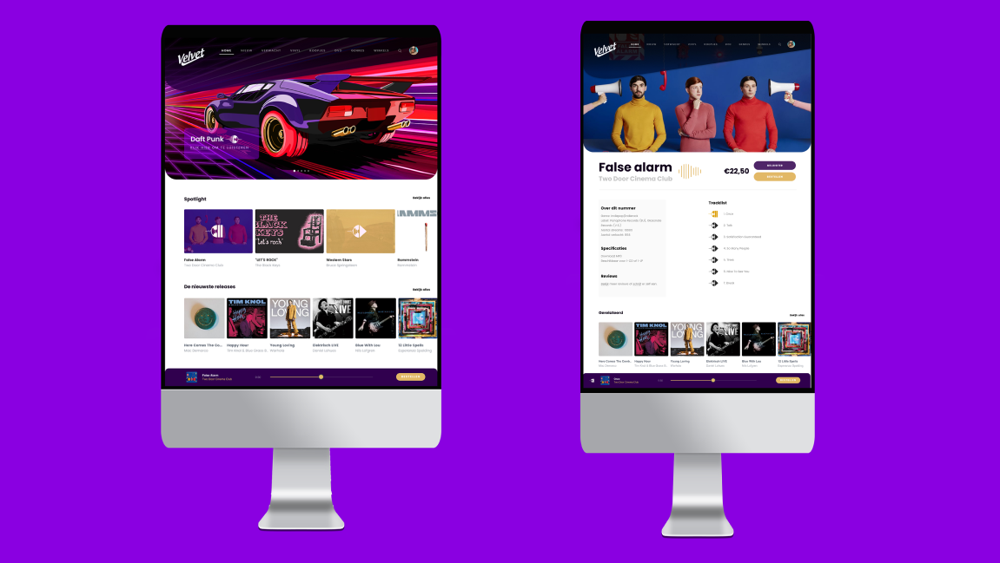
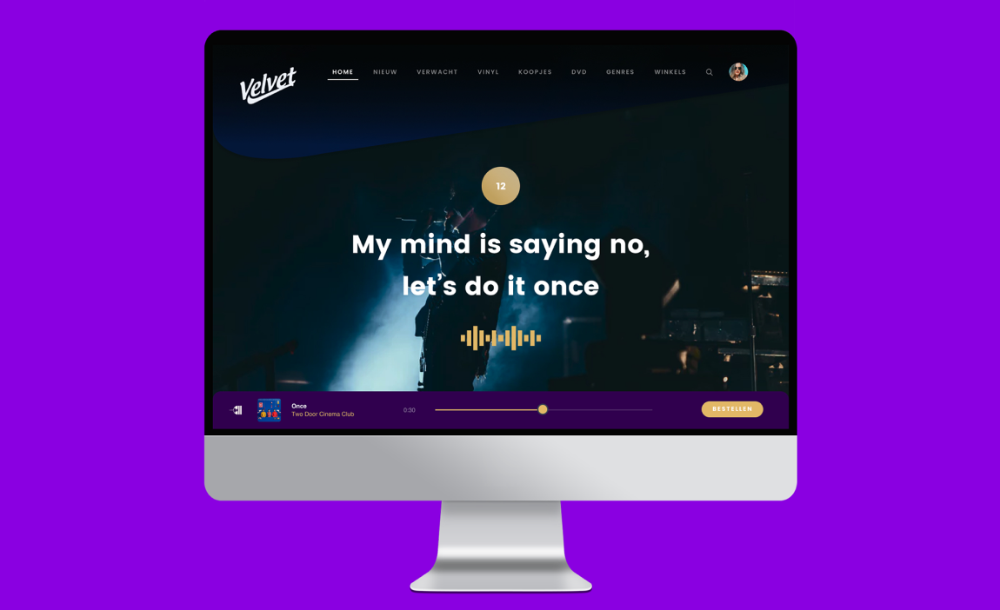

- 
- 
-
Issue
The Velvet Music online store allows the user to order a very wide range of music (and movies), but does not convey the shopping experience of the physical stores. The user experience of the Velvet online store is not optimal. As a result, Velvet cannot distinguish itself from their competitors in the field of online sales.
-
Objective
The goal is to make the Velvet online website more enjoyable and meaningful for music lovers, existing customers and new customers. The starting point is the experience of the users through User Experience.
-
Design Report
For this project I delivered several works with my project group, which is collected in a design report. The design report contains the design assignment of a benchmark and a storyboard, the design assignment of a detail page for Velvet and the design assignment of applying gamification on the Velvet website. It also contains the theory assignment by means of a presentation.